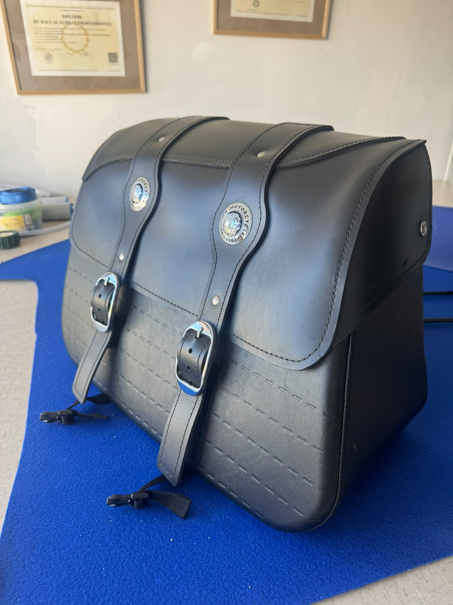
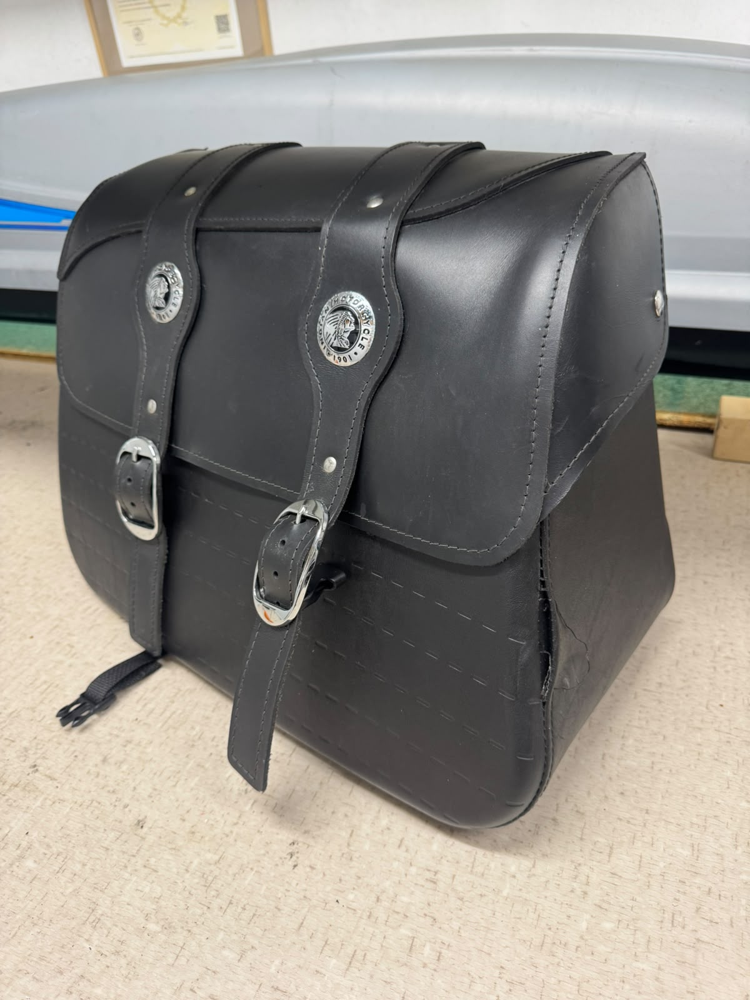

Des pièces restaurées avec élégance, confort et caractère
L’atelier Cabanes du Sellier conçoit des interventions sur mesure pour les sièges, banquettes et pièces de mobilier avec un souci constant du détail
- 01Restauration de sièges et garnitures
- 02Travail du cuir, du simili et des matières techniques
- 03Conseil sur les teintes, les coutures et la finition
Chaque projet est étudié selon l’usage, la matière et le rendu recherché, puis restauré avec exigence, précision et goût.
Que ce soit pour une restauration, une personnalisation ou une création originale, l’objectif est de vous proposer une solution élégante et fiable
Découvrir l’atelier →Des interventions artisanales pensées pour durer, se porter et sublimer
De la réparation à la personnalisation, chaque projet reçoit la même attention : qualité des matières, précision des finitions et respect du caractère de la pièce

Sellerie auto & moto
Réfection de sièges, habillage, coutures, mousses et restauration d’intérieurs en cuir ou matière technique

Mobilier & personnalisation
Restauration de fauteuils, banquettes, sièges et pièces décoratives pour leur donner un second souffle
Chaque projet reçoit l’attention d’un artisan passionné
L’approche de l’atelier repose sur une écoute attentive, un travail minutieux et une recherche de qualité durable, chaque finition est pensée pour durer et pour sublimer la pièce traitée
-
Étape 01
Analyse du besoin
Écoute du projet, usage, matière et rendu attendu
-
Étape 02
Réalisation soignée
Préparation, couture, réparation et mise en forme précise
-
Étape 03
Résultat raffiné
Finitions élégantes, durables et adaptées à chaque pièce
Photos et vidéos de réalisations en atelier
Ici, on présente les projets terminés avec des photos et des vidéos de réalisation, pour montrer le résultat final et le travail en cours


La parole à ceux qui nous ont confié leurs pièces
Chaque avis compte pour un artisan : il aide d’autres clients à choisir en confiance et récompense le travail bien fait.
Vous avez fait appel à l’atelier ?
Partagez votre expérience en quelques mots sur Google : cela prend une minute et aide énormément.
Laisser un avis GoogleParlez-nous de votre projet, nous vous répondrons rapidement
Décrivez la pièce, son état actuel et le résultat souhaité, nous vous orienterons vers la meilleure solution technique et esthétique